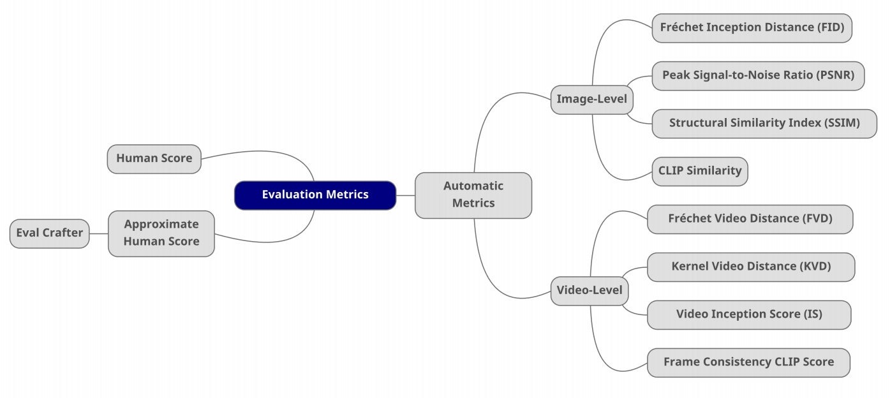
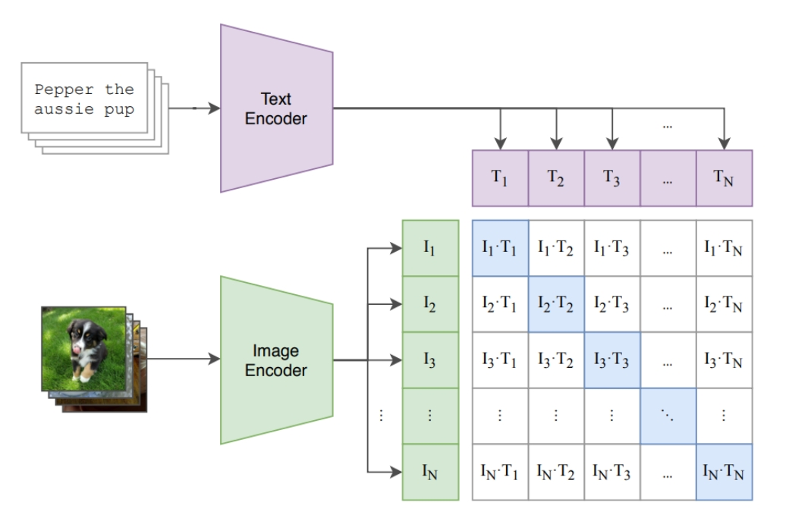
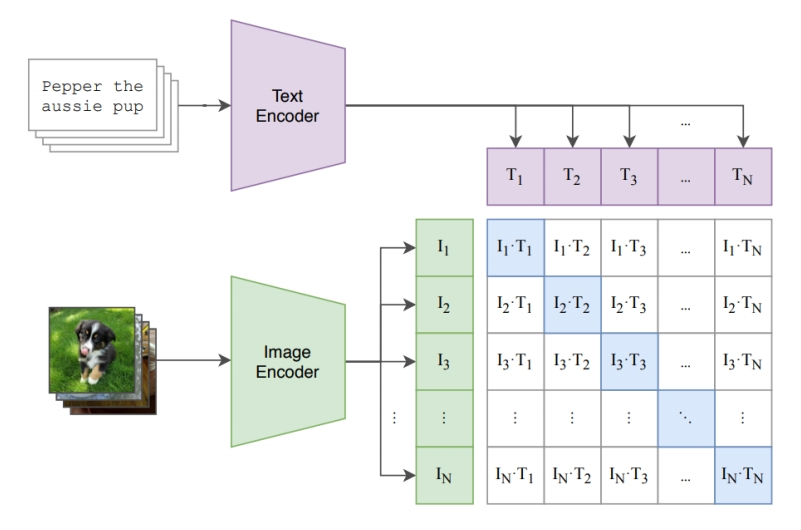
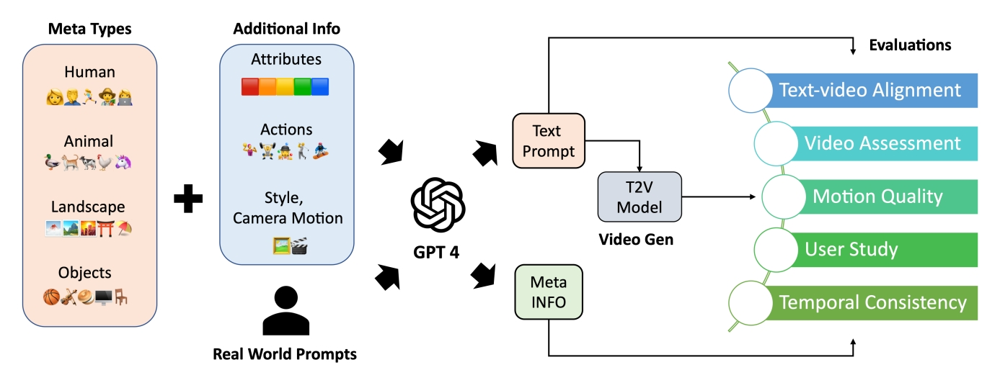
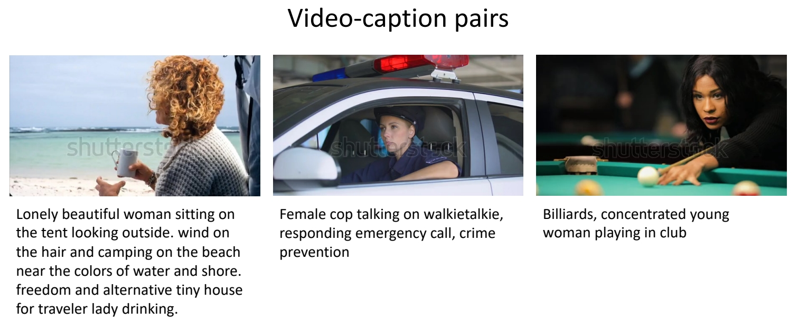

评价指标

图像质量、视频质量、一致性、多样性、美学和动作准确性

Image-level Evaluation Metrics
- Fréchet Inception Distance (FID, ↓): semantic similarity between images
- Peak Signal-to-Noise Ratio (PSNR, ↑): pixel-level similarity between images
- Structural Similarity Index (SSIM, ↓): pixel-level similarity between images
- CLIPSIM (↑): image-text relevance
Fréchet Inception Distance (FID)
✅ FID：评估两个 distribution 的差距有多大。
✅ 由于使用了网络的高层 feature，可以评价 high／evel 的语义相似性。

✅ CNN＋Softmax 是一个预训练好的图像分类网络，取 softmax 上一层做为图像的 feature.
✅ 取大量真实图像的 feature 和预训练模型生成的图 feature.
✅ 假设两类图像的 feature 各自符合高斯分布，计算两个分布的距离。
✅ 优点：评价结果与人类直觉很接近，缺点：需要大量 sample.
P49
Peak Signal-to-Noise Ratio (PSNR)
Pixel-level similarity between images
- For two images \(x,y \text{ of shape } M\times N\):
\begin{align*} \mathrm{PSNR} (x,y) = 10 \log_{10}{} \frac{255^2}{\mathrm{MSE} (x,y)} \end{align*}
where
\begin{align*} \mathrm{MSE} (x,y) = \frac{1}{MN} \sum_{i=1}^{M} \sum_{j=1}^{N} (x_{ij}-y_{ij})^2\end{align*}
P50
Structural Similarity Index Measure (SSIM)
Pixel-level similarity between images
-
Model any image distortion as a combination of:
(1) loss of correlation, (2) luminance distortion, (3) contrast distortion -
For two images \(x,y \text{ of shape } M\times N\):
\begin{align*} \mathrm{SSIM} (x,y)=l(x,y)\cdot c(x,y)\cdot s(x,y)\end{align*}
where
\begin{align*} \begin{cases} \text{Lumiannce Comparison Funckon:} l(x,y)=\frac{2\mu _x\mu _y+C_1}{\mu _x^2+\mu _y^2+C_1} \\ \text{Contrast Comparison Funckon:} c(x,y)=\frac{2\sigma _x\sigma _y+C_2}{\sigma _x^2+\sigma _y^2+C_2} \\ \text{Structure Comparison Funckon:} s(x,y)=\frac{\sigma _{xy}+C_3}{\sigma _{x}\sigma _{y}+C_3} \end{cases}\end{align*}
P51
CLIP Similarity
✅ CLIP Score，衡量与文字的匹配度。 
| ID | Year | Name | Note | Tags | Link |
|---|---|---|---|---|---|
| 2017 | GANs Trained by a Two Time-Scale Update Rule Converge to a Local Nash Equilibrium | link | |||
| 2023 | Hung-Yi Lee, “Machine Learning 2023 Spring,” National Taiwan University. | ||||
| 2010 | Horé et al., “Image Quality Metrics: PSNR vs. SSIM,” | ||||
| 2004 | Wang et al., “Image Quality Assessment: from Error Visibility to Structural Similarity,” | ||||
| 2021 | Radford et al., “Learning Transferable Visual Models From Natural Language Supervision,” |
Video-level Evaluation Metrics
- Fréchet Video Distance (FVD, ↓): semantic similarity & temporal coherence
- Kernel Video Distance (KVD, ↓): video quality (via semantic features and MMD)
- Video Inception Score (IS, ↑): video quality and diversity
- Frame Consistency CLIP Score (↑): frame temporal semantic consistency
P52
Fréchet Video Distance (FVD)
Semantic similarity and temporal coherence between two videos

P53
Kernel Video Distance
Video quality assessment via semantic features and MMD

P54
Video Inception Score (IS)
Video quality and diversity

✅ 多样性，在不给定 condition 的情况生成的分布的多样性。
✅ 质量：在给 condition 的条件下应生成特定的类别。
P55
Frame Consistence CLIP scores
Frame temporal semantic consistency
- Compute CLIP image embeddings for all frames
- Report average cosine similarity between all pairs of frames

| ID | Year | Name | Note | Tags | Link |
|---|---|---|---|---|---|
| 2019 | Unterthiner et al., “FVD: A new Metric for Video Generation,” | ||||
| 2018 | Unterthiner et al., “Towards Accurate Generative Models of Video: A New Metric & Challenges,” | ||||
| 2016 | Salimans et al., “Improved Techniques for Training GANs,” | ||||
| 2018 | Barratt et al., “A Note on the Inception Score,” | ||||
| 2020 | Saito et al., “Train Sparsely, Generated Densely: Memory-Efficient Unsupervised Training of High-Resolution Temporal GAN,” | ||||
| 2021 | Radford et al., “Learning Transferable Visual Models From Natural Language Supervision,” |
P57
主观评价
Hybrid evaluation：EvalCrafter
- Creates a balanced prompt list for evaluation
- Multi-criteria decision analysis on 18 metrics: visual quality, content quality…
- Regress the coefficients of all metrics to generate an overall score aligned with user opinions

| ID | Year | Name | Note | Tags | Link |
|---|---|---|---|---|---|
| 2023 | Liu et al., “EvalCrafter: Benchmarking and Evaluating Large Video Generation Models,” |
P45
Datasets
The WebVid-10M Dataset

Bain et al., “Frozen in Time: A Joint Video and Image Encoder for End to End Paper,” ICCV 2021.
✅ WebVid 是常用的视频数据集，有高清视频及配对文本。